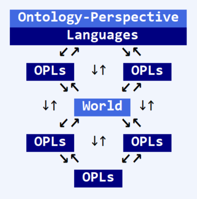

Figure 4. Conrad corollary
|  |
The Conrad corollary to Sowa's hexagon sees the world awash in languages that reflect different ontological perspectives, concepts, and logic systems. These are reflected in terminology and usage. Some are naturally-occurring. Some are engineered. Some are dysfunctional. Modern communication systems allow them to compete, globally, for attention and influence.
attempted to integrate and synthesize multiple ontologies and associated languages:
Word processing and its visual concept of the document, which focuses on how text is arranged and looks on a page, and the ad-hoc, often-redundant behaviors associated with applying layout and style formatting rules with a mouse.
The UNIX tradition of little languages and little bots for text processing.
Semantic markup, SGML, XML, etc., which are based on IBM's hierarchical concept of the document.
Knowledge management and engineering. Concepts for describing the fractal ways that data is transformed into information and synthesized into actionable knowledge to enable intelligent, intentional behavior. Data's about the details. Information's about organizing. Knowledge's about actionable behaviors.
Multiple operational ontologies for concepts of semantics and meaning. What “meaning” means for humans, automated, and organizational systems. How semantic technologies and formalized ontologies can be used to engineer knowledge about and understanding of meaning in these different behavioral contexts..
Policy making and performance. Techniques for helping folks articulate perceived values to rapidly reach agreements around terms, meanings, priorities, and operational details. The vocabularies of the Government Performance and Results Act, activity-based costing, and value canvasses.
Remember, style is something that things fall out of, and relational database tables are OK for data, but didn't and don't work for organizing documents. | ||
| --Test Subject | ||